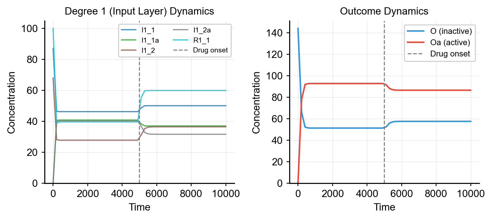

Solvers & Simulation
Solver Overview
Synthetic provides three solver backends for ODE simulation:
| Solver | Input Format | Features | Use Case |
|---|---|---|---|
| ScipySolver | Antimony | JIT compilation via numba, fast batch | Default, parameter sweeps |
| RoadrunnerSolver | SBML | Full SBML support, robust | Complex models, single simulations |
| HTTPSolver | HTTP API | Remote simulation, distributed computing | Server-based workflows |
Using the Built-in Solver
make_dataset_drug_response handles solver creation internally. Choose the backend with solver_type:
from synthetic import Builder, make_dataset_drug_response
vc = Builder.specify(degree_cascades=[1, 2, 5], random_seed=42)
# Default: ScipySolver (fast, with JIT)
X, y = make_dataset_drug_response(n=100, cell_model=vc, solver_type='scipy', jit=True)
# Alternative: RoadrunnerSolver
X, y = make_dataset_drug_response(n=100, cell_model=vc, solver_type='roadrunner')
Direct Solver Usage
For custom simulation workflows, use solvers directly.
ScipySolver
Uses scipy.integrate.odeint with optional JIT compilation:
from synthetic import Builder
from synthetic.Solver.ScipySolver import ScipySolver
vc = Builder.specify(degree_cascades=[2, 3, 4], random_seed=42)
# Get Antimony model string
antimony = vc.model.get_antimony_model()
# Compile and simulate
solver = ScipySolver()
solver.compile(antimony, jit=True) # Enable JIT for faster execution
results = solver.simulate(start=0, stop=10000, step=50)
print(results.head())
RoadrunnerSolver
Uses libRoadRunner for SBML simulation. Requires SBML format (not Antimony):
from synthetic.Solver.RoadrunnerSolver import RoadrunnerSolver
# Get SBML model string
sbml = vc.model.get_sbml_model()
solver = RoadrunnerSolver()
solver.compile(sbml)
results = solver.simulate(start=0, stop=10000, step=50)
Simulation Output
Both solvers return a pandas DataFrame with a time column and one column per species:
time R1_1 R1_1a I1_1 I1_1a O Oa
0 0.0 100.00 0.00 100.00 0.00 100.0 0.0
1 50.0 95.23 4.77 98.10 1.90 99.5 0.5
2 100.0 91.50 8.50 96.40 3.60 98.8 1.2
...
Timecourse Simulation
Simulate and visualize species dynamics over time. The vertical dashed line marks drug onset:
from synthetic import Builder
from synthetic.Solver.ScipySolver import ScipySolver
import matplotlib.pyplot as plt
vc = Builder.specify(degree_cascades=[2, 3, 4], random_seed=42)
antimony = vc.model.get_antimony_model()
solver = ScipySolver()
solver.compile(antimony, jit=False)
timecourse = solver.simulate(start=0, stop=10000, step=50)
# Plot outcome dynamics
fig, ax = plt.subplots()
ax.plot(timecourse['time'], timecourse['O'], label='O (inactive)')
ax.plot(timecourse['time'], timecourse['Oa'], label='Oa (active)')
ax.axvline(x=5000, color='gray', linestyle='--', label='Drug onset')
ax.set_xlabel('Time')
ax.set_ylabel('Concentration')
ax.legend()
plt.show()
Comparing Solvers
Run the same simulation with both solvers to compare results. Both produce identical dynamics:

from synthetic.Solver.ScipySolver import ScipySolver
from synthetic.Solver.RoadrunnerSolver import RoadrunnerSolver
# ScipySolver
solver_scipy = ScipySolver()
solver_scipy.compile(vc.model.get_antimony_model(), jit=False)
tc_scipy = solver_scipy.simulate(start=0, stop=10000, step=50)
# RoadrunnerSolver
solver_rr = RoadrunnerSolver()
solver_rr.compile(vc.model.get_sbml_model())
tc_rr = solver_rr.simulate(start=0, stop=10000, step=50)
# Compare outcome at final timepoint
print(f"ScipySolver Oa: {tc_scipy['Oa'].iloc[-1]:.4f}")
print(f"RoadrunnerSolver Oa: {tc_rr['Oa'].iloc[-1]:.4f}")
HTTP Solver for Remote Simulation
The HTTPSolver sends simulation requests to a remote server via HTTP. This is useful for distributed computing or when the simulation engine runs on a separate machine.
Client Usage
from synthetic.Solver.HTTPSolver import HTTPSolver
solver = HTTPSolver()
# Connect and validate endpoint
solver.compile("http://localhost:8000/simulate")
# Get default states and parameters
states = solver.get_state_defaults()
params = solver.get_parameter_defaults()
# Override values
solver.set_state_values({"R1_1": 1000.0})
solver.set_parameter_values({"Km_J0": 10.0})
# Run simulation
results = solver.simulate(start=0, stop=60, step=0.5)
Server Setup
The HTTP solver requires a server implementing the simulation API. See examples/httpsolver_api.md for the full API specification. A minimal FastAPI server:
from fastapi import FastAPI
from pydantic import BaseModel
from typing import Dict, Optional
app = FastAPI()
class SimulationRequest(BaseModel):
start: float
stop: float
step: float
state_values: Optional[Dict[str, float]] = None
parameter_values: Optional[Dict[str, float]] = None
@app.get("/states")
async def get_states():
return {"S1": 100.0, "S1a": 0.0}
@app.get("/parameters")
async def get_parameters():
return {"Vmax_J0": 100.0, "Km_J0": 50.0}
@app.post("/simulate")
async def simulate(req: SimulationRequest):
# Run simulation with requested parameters
return {"time": [req.start, req.stop], "S1": [100.0, 90.0], "S1a": [0.0, 10.0]}
Solver Selection Guide
| Scenario | Recommended Solver |
|---|---|
| Default dataset generation | ScipySolver (solver_type='scipy') |
| Batch simulations (1000+ samples) | ScipySolver with jit=True |
| Complex SBML models | RoadrunnerSolver |
| Need robust single simulations | RoadrunnerSolver |
| Remote/distributed computing | HTTPSolver |
| Parameter estimation loops | ScipySolver with jit=False |